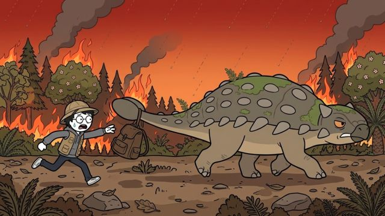

EP2 小行星撞地球
Chicxulub 小行星：寫故事前的科普準備。
EP2 進度：18／25 步
目前：第 19 步補救：照最新分鏡表（以成品為準）重挑、修改（11-19）
11. 選章
決定這一集改編書的哪一章。
✅ 完成：第 2 章 Chicxulub
檢查頁：對話裡說22. 列出書上的知識點
把這一章裡所有講真實世界的事實，一條一條列出來（附原文和頁碼），先不管對錯。
✅ 完成：95 點（逐頁核對過）
檢查頁：不停；彙整進第 5 步的科普報告33. 查核書上的知識點
每一點上網查對不對、附出處；我判定可以用或不能用。
✅ 完成
檢查頁：不停；彙整進第 5 步的科普報告44. 想書外知識
故事需要、但書上沒講的知識（地點、年代、環境、動物…），我自己列出來。
✅ 完成：17 點＋矮暴龍 4 點
檢查頁：不停；彙整進第 5 步的科普報告55. 查核書外知識
書外知識也查對錯和出處；全部整理成科普報告，列出可以用和不能用的。
✅ 完成：17 點＋矮暴龍 4 點（11-17）
檢查頁：科普報告（可以不看）66. 系列設定
整個系列共用的設定，預設沿用。
➖ 跳過：沿用 EP1，沒有要改
檢查頁：設定集（預設沿用）77. 大綱
這一集的骨架：每一段發生什麼、用哪些可以用的知識點，加上固定橋段這集怎麼填。
✅ 完成：v4（11-19）：照拍攝清單 v4 對齊，17 段；等你看（outline-ep2/）；11-19 新流程：這步不用等你
檢查頁：不停；放進劇本頁88. 寫劇本
照大綱寫成劇本：動作描述和旁白，只有文字。
✅ 完成：story v6（11-19）：照拍攝清單 v4 對齊，旁白沒改
檢查頁：不停；放進劇本頁99. 潤旁白
把旁白順成念得通順的錄音稿；跟大綱、劇本放在同一頁（劇本頁）。
✅ 完成：82 格改了 59 格，等你看對照頁（narration-smooth-ep2/）；11-19 新流程：這步不用等你
檢查頁：劇本頁（可以不看）1010. 分場
把劇本分成一場一場，每場一個地點，記下角色、服裝、道具。
✅ 完成：v4（11-19）：131 格、旁白沒改；補每段地點和環境音、每格看得到的細節、道具時間線；等你確認；加長版 17 幕（scenes_v2，11-18 Claude 分），等你看；11-19 新流程：這步不用等你
檢查頁：不停；放進分場表1111. 場景地圖
每個地點畫一張俯視地圖，讓同一地點的每個鏡頭畫面一致。
✅ 完成：沿用 8 張；11-19 補房間、學校餐廳、實驗室的窗外遠景（outside），等你看；11-19 新流程：這步不用等你
檢查頁：不停；放進分場表1212. 設定圖
畫這集新的角色、道具、地點、動物的設定圖；跟場、地圖一起放進分場表。
✅ 完成：新畫 7 張（矮暴龍、三角龍、鼩鼱、小行星、山洞、高處土丘、學校餐廳）＋比例圖 PAIR2_NANO／TRICERA；EP2 專案共 37 張參考圖
檢查頁：分場表（可以不看）1313. 分鏡設計（拆鏡頭）
每一場拆成鏡頭，決定每個鏡頭拍誰、多遠、什麼角度，寫成英文 prompt。
✅ 完成：12 幕 96 格（11-17）
檢查頁：不停；放進分鏡表1414. 檢查分鏡回覆
檢查旁白有沒有全部分到鏡頭、一字不差，遠景備份有沒有，欄位對不對。
✅ 完成：旁白全部分配到，沒有漏句
檢查頁：不停；我做1515. 補背景和參考圖
照地圖寫每個鏡頭的背景，決定每個鏡頭附哪些參考圖。
✅ 完成：Claude 逐格手寫；新增 REF_HERO_NOBAG、REF_PLANTS、REF_SKYC_1～6（11-17～18）
檢查頁：不停；分鏡表每個鏡頭的中文 prompt1616. Flow 畫圖
把 prompt 和參考圖送進 Flow，每個鏡頭畫 4 條。
✅ 完成：93 格＋HERO＋大恐龍 30 格的大小測試 B、C 版（11-18）
檢查頁：不停1717. 挑圖、下載、配音、壓粗剪
每個鏡頭挑一條、下載 2K、配音，壓成粗剪給你看。
🔵 進行中：11-19 以成品 ep2_v2.mp4 為準整理成最新分鏡表（storyboard-ep2-final/）和定稿畫面（picks-ep2-final/），兩頁一致；11-18 第 1 版：voice_tools 念完 81 格 7.2 分鐘（補念＋4 格拆段重念）；等你聽
檢查頁：停：粗剪；分鏡表和定稿畫面一致1818. 改版
照你看粗剪的意見，走四條線之一回頭改，再壓粗剪；循環到你同意定版。
🔵 進行中：照最新分鏡表重挑、修改
檢查頁：停：你寫意見，循環到定版1919. 動畫
暫不做。
➖ 跳過：2026-11-19 暫不做
檢查頁：暫不做2020. 音效
定版後配環境音和事件音效。
⬜ 還沒開始
檢查頁：不停2121. 配樂
暫不做。
➖ 跳過：2026-11-19 暫不做
檢查頁：暫不做2222. 運鏡＋組片
加上鏡頭移動、音效，從定版粗剪組成成片。
🔵 進行中：11-18 第 1 版 ep2_v1.mp4（Claude 每格挑一張、不運鏡、無音效配樂）
檢查頁：不停2323. 看成片
你看完整集；不滿意就回到 19～22 改。
🟠 等你確認：第 1 版等你看
檢查頁：停：成片 mp4；問題在對話裡講2424. 封面、標題、說明欄
做封面、寫標題和說明欄，給你看；上傳你自己來。
⬜ 還沒開始
檢查頁：停：還沒有頁面2525. 英文版
旁白改寫成英文、英文配音、重組；英文封面和說明。
⬜ 還沒開始
檢查頁：停：英文封面和說明；還沒有頁面
決定這一集改編書的哪一章。
✅ 完成：第 2 章 Chicxulub
檢查頁：對話裡說22. 列出書上的知識點
把這一章裡所有講真實世界的事實，一條一條列出來（附原文和頁碼），先不管對錯。
✅ 完成：95 點（逐頁核對過）
檢查頁：不停；彙整進第 5 步的科普報告33. 查核書上的知識點
每一點上網查對不對、附出處；我判定可以用或不能用。
✅ 完成
檢查頁：不停；彙整進第 5 步的科普報告44. 想書外知識
故事需要、但書上沒講的知識（地點、年代、環境、動物…），我自己列出來。
✅ 完成：17 點＋矮暴龍 4 點
檢查頁：不停；彙整進第 5 步的科普報告55. 查核書外知識
書外知識也查對錯和出處；全部整理成科普報告，列出可以用和不能用的。
✅ 完成：17 點＋矮暴龍 4 點（11-17）
檢查頁：科普報告（可以不看）66. 系列設定
整個系列共用的設定，預設沿用。
➖ 跳過：沿用 EP1，沒有要改
檢查頁：設定集（預設沿用）77. 大綱
這一集的骨架：每一段發生什麼、用哪些可以用的知識點，加上固定橋段這集怎麼填。
✅ 完成：v4（11-19）：照拍攝清單 v4 對齊，17 段；等你看（outline-ep2/）；11-19 新流程：這步不用等你
檢查頁：不停；放進劇本頁88. 寫劇本
照大綱寫成劇本：動作描述和旁白，只有文字。
✅ 完成：story v6（11-19）：照拍攝清單 v4 對齊，旁白沒改
檢查頁：不停；放進劇本頁99. 潤旁白
把旁白順成念得通順的錄音稿；跟大綱、劇本放在同一頁（劇本頁）。
✅ 完成：82 格改了 59 格，等你看對照頁（narration-smooth-ep2/）；11-19 新流程：這步不用等你
檢查頁：劇本頁（可以不看）1010. 分場
把劇本分成一場一場，每場一個地點，記下角色、服裝、道具。
✅ 完成：v4（11-19）：131 格、旁白沒改；補每段地點和環境音、每格看得到的細節、道具時間線；等你確認；加長版 17 幕（scenes_v2，11-18 Claude 分），等你看；11-19 新流程：這步不用等你
檢查頁：不停；放進分場表1111. 場景地圖
每個地點畫一張俯視地圖，讓同一地點的每個鏡頭畫面一致。
✅ 完成：沿用 8 張；11-19 補房間、學校餐廳、實驗室的窗外遠景（outside），等你看；11-19 新流程：這步不用等你
檢查頁：不停；放進分場表1212. 設定圖
畫這集新的角色、道具、地點、動物的設定圖；跟場、地圖一起放進分場表。
✅ 完成：新畫 7 張（矮暴龍、三角龍、鼩鼱、小行星、山洞、高處土丘、學校餐廳）＋比例圖 PAIR2_NANO／TRICERA；EP2 專案共 37 張參考圖
檢查頁：分場表（可以不看）1313. 分鏡設計（拆鏡頭）
每一場拆成鏡頭，決定每個鏡頭拍誰、多遠、什麼角度，寫成英文 prompt。
✅ 完成：12 幕 96 格（11-17）
檢查頁：不停；放進分鏡表1414. 檢查分鏡回覆
檢查旁白有沒有全部分到鏡頭、一字不差，遠景備份有沒有，欄位對不對。
✅ 完成：旁白全部分配到，沒有漏句
檢查頁：不停；我做1515. 補背景和參考圖
照地圖寫每個鏡頭的背景，決定每個鏡頭附哪些參考圖。
✅ 完成：Claude 逐格手寫；新增 REF_HERO_NOBAG、REF_PLANTS、REF_SKYC_1～6（11-17～18）
檢查頁：不停；分鏡表每個鏡頭的中文 prompt1616. Flow 畫圖
把 prompt 和參考圖送進 Flow，每個鏡頭畫 4 條。
✅ 完成：93 格＋HERO＋大恐龍 30 格的大小測試 B、C 版（11-18）
檢查頁：不停1717. 挑圖、下載、配音、壓粗剪
每個鏡頭挑一條、下載 2K、配音，壓成粗剪給你看。
🔵 進行中：11-19 以成品 ep2_v2.mp4 為準整理成最新分鏡表（storyboard-ep2-final/）和定稿畫面（picks-ep2-final/），兩頁一致；11-18 第 1 版：voice_tools 念完 81 格 7.2 分鐘（補念＋4 格拆段重念）；等你聽
檢查頁：停：粗剪；分鏡表和定稿畫面一致1818. 改版
照你看粗剪的意見，走四條線之一回頭改，再壓粗剪；循環到你同意定版。
🔵 進行中：照最新分鏡表重挑、修改
檢查頁：停：你寫意見，循環到定版1919. 動畫
暫不做。
➖ 跳過：2026-11-19 暫不做
檢查頁：暫不做2020. 音效
定版後配環境音和事件音效。
⬜ 還沒開始
檢查頁：不停2121. 配樂
暫不做。
➖ 跳過：2026-11-19 暫不做
檢查頁：暫不做2222. 運鏡＋組片
加上鏡頭移動、音效，從定版粗剪組成成片。
🔵 進行中：11-18 第 1 版 ep2_v1.mp4（Claude 每格挑一張、不運鏡、無音效配樂）
檢查頁：不停2323. 看成片
你看完整集；不滿意就回到 19～22 改。
🟠 等你確認：第 1 版等你看
檢查頁：停：成片 mp4；問題在對話裡講2424. 封面、標題、說明欄
做封面、寫標題和說明欄，給你看；上傳你自己來。
⬜ 還沒開始
檢查頁：停：還沒有頁面2525. 英文版
旁白改寫成英文、英文配音、重組；英文封面和說明。
⬜ 還沒開始
檢查頁：停：英文封面和說明；還沒有頁面
綠＝完成／跳過／事後補 橘＝等你確認 藍＝進行中 灰＝還沒開始。滑鼠移到編號或步驟名稱上，會跳出這步在幹嘛。
25 步明細
| # | 步驟 | 狀態 | 備註 | 檢查頁 |
|---|---|---|---|---|
| 1 | 選章1. 選章 決定這一集改編書的哪一章。 ✅ 完成：第 2 章 Chicxulub 檢查頁：對話裡說 | ✅ 完成 | 第 2 章 Chicxulub | |
| 2 | 列出書上的知識點2. 列出書上的知識點 把這一章裡所有講真實世界的事實，一條一條列出來（附原文和頁碼），先不管對錯。 ✅ 完成：95 點（逐頁核對過） 檢查頁：不停；彙整進第 5 步的科普報告 | ✅ 完成 | 95 點（逐頁核對過） | EP1-new 科普報告 |
| 3 | 查核書上的知識點3. 查核書上的知識點 每一點上網查對不對、附出處；我判定可以用或不能用。 ✅ 完成 檢查頁：不停；彙整進第 5 步的科普報告 | ✅ 完成 | EP1-new 科普報告 | |
| 4 | 想書外知識4. 想書外知識 故事需要、但書上沒講的知識（地點、年代、環境、動物…），我自己列出來。 ✅ 完成：17 點＋矮暴龍 4 點 檢查頁：不停；彙整進第 5 步的科普報告 | ✅ 完成 | 17 點＋矮暴龍 4 點 | EP1-new 科普報告 |
| 5 | 查核書外知識5. 查核書外知識 書外知識也查對錯和出處；全部整理成科普報告，列出可以用和不能用的。 ✅ 完成：17 點＋矮暴龍 4 點（11-17） 檢查頁：科普報告（可以不看） | ✅ 完成 | 17 點＋矮暴龍 4 點（11-17） | EP1-new 科普報告、EP2 科普準備報告 |
| 6 | 系列設定6. 系列設定 整個系列共用的設定，預設沿用。 ➖ 跳過：沿用 EP1，沒有要改 檢查頁：設定集（預設沿用） | ➖ 跳過 | 沿用 EP1，沒有要改 | 人物與場景設定 |
| 7 | 大綱7. 大綱 這一集的骨架：每一段發生什麼、用哪些可以用的知識點，加上固定橋段這集怎麼填。 ✅ 完成：v4（11-19）：照拍攝清單 v4 對齊，17 段；等你看（outline-ep2/）；11-19 新流程：這步不用等你 檢查頁：不停；放進劇本頁 | ✅ 完成 | v4（11-19）：照拍攝清單 v4 對齊，17 段；等你看（outline-ep2/）；11-19 新流程：這步不用等你 | EP1-new 大綱 |
| 8 | 寫劇本8. 寫劇本 照大綱寫成劇本：動作描述和旁白，只有文字。 ✅ 完成：story v6（11-19）：照拍攝清單 v4 對齊，旁白沒改 檢查頁：不停；放進劇本頁 | ✅ 完成 | story v6（11-19）：照拍攝清單 v4 對齊，旁白沒改 | EP1-new 故事 |
| 9 | 潤旁白9. 潤旁白 把旁白順成念得通順的錄音稿；跟大綱、劇本放在同一頁（劇本頁）。 ✅ 完成：82 格改了 59 格，等你看對照頁（narration-smooth-ep2/）；11-19 新流程：這步不用等你 檢查頁：劇本頁（可以不看） | ✅ 完成 | 82 格改了 59 格，等你看對照頁（narration-smooth-ep2/）；11-19 新流程：這步不用等你 | EP1-new 故事 |
| 10 | 分場10. 分場 把劇本分成一場一場，每場一個地點，記下角色、服裝、道具。 ✅ 完成：v4（11-19）：131 格、旁白沒改；補每段地點和環境音、每格看得到的細節、道具時間線；等你確認；加長版 17 幕（scenes_v2，11-18 Claude 分），等你看；11-19 新流程：這步不用等你 檢查頁：不停；放進分場表 | ✅ 完成 | v4（11-19）：131 格、旁白沒改；補每段地點和環境音、每格看得到的細節、道具時間線；等你確認；加長版 17 幕（scenes_v2，11-18 Claude 分），等你看；11-19 新流程：這步不用等你 | EP1-new 拍攝清單 |
| 11 | 場景地圖11. 場景地圖 每個地點畫一張俯視地圖，讓同一地點的每個鏡頭畫面一致。 ✅ 完成：沿用 8 張；11-19 補房間、學校餐廳、實驗室的窗外遠景（outside），等你看；11-19 新流程：這步不用等你 檢查頁：不停；放進分場表 | ✅ 完成 | 沿用 8 張；11-19 補房間、學校餐廳、實驗室的窗外遠景（outside），等你看；11-19 新流程：這步不用等你 | EP2 拍攝清單（切格＋分幕＋地圖） |
| 12 | 設定圖12. 設定圖 畫這集新的角色、道具、地點、動物的設定圖；跟場、地圖一起放進分場表。 ✅ 完成：新畫 7 張（矮暴龍、三角龍、鼩鼱、小行星、山洞、高處土丘、學校餐廳）＋比例圖 PAIR2_NANO／TRICERA；EP2 專案共 37 張參考圖 檢查頁：分場表（可以不看） | ✅ 完成 | 新畫 7 張（矮暴龍、三角龍、鼩鼱、小行星、山洞、高處土丘、學校餐廳）＋比例圖 PAIR2_NANO／TRICERA；EP2 專案共 37 張參考圖 | EP2 新設定圖：挑圖、人物與場景設定 |
| 13 | 分鏡設計（拆鏡頭）13. 分鏡設計（拆鏡頭） 每一場拆成鏡頭，決定每個鏡頭拍誰、多遠、什麼角度，寫成英文 prompt。 ✅ 完成：12 幕 96 格（11-17） 檢查頁：不停；放進分鏡表 | ✅ 完成 | 12 幕 96 格（11-17） | 分鏡回覆查詢 |
| 14 | 檢查分鏡回覆14. 檢查分鏡回覆 檢查旁白有沒有全部分到鏡頭、一字不差，遠景備份有沒有，欄位對不對。 ✅ 完成：旁白全部分配到，沒有漏句 檢查頁：不停；我做 | ✅ 完成 | 旁白全部分配到，沒有漏句 | |
| 15 | 補背景和參考圖15. 補背景和參考圖 照地圖寫每個鏡頭的背景，決定每個鏡頭附哪些參考圖。 ✅ 完成：Claude 逐格手寫；新增 REF_HERO_NOBAG、REF_PLANTS、REF_SKYC_1～6（11-17～18） 檢查頁：不停；分鏡表每個鏡頭的中文 prompt | ✅ 完成 | Claude 逐格手寫；新增 REF_HERO_NOBAG、REF_PLANTS、REF_SKYC_1～6（11-17～18） | EP1-new 分鏡表 |
| 16 | Flow 畫圖16. Flow 畫圖 把 prompt 和參考圖送進 Flow，每個鏡頭畫 4 條。 ✅ 完成：93 格＋HERO＋大恐龍 30 格的大小測試 B、C 版（11-18） 檢查頁：不停 | ✅ 完成 | 93 格＋HERO＋大恐龍 30 格的大小測試 B、C 版（11-18） | |
| 17 | 挑圖、下載、配音、壓粗剪17. 挑圖、下載、配音、壓粗剪 每個鏡頭挑一條、下載 2K、配音，壓成粗剪給你看。 🔵 進行中：11-19 以成品 ep2_v2.mp4 為準整理成最新分鏡表（storyboard-ep2-final/）和定稿畫面（picks-ep2-final/），兩頁一致；11-18 第 1 版：voice_tools 念完 81 格 7.2 分鐘（補念＋4 格拆段重念）；等你聽 檢查頁：停：粗剪；分鏡表和定稿畫面一致 | 🔵 進行中 | 11-19 以成品 ep2_v2.mp4 為準整理成最新分鏡表（storyboard-ep2-final/）和定稿畫面（picks-ep2-final/），兩頁一致；11-18 第 1 版：voice_tools 念完 81 格 7.2 分鐘（補念＋4 格拆段重念）；等你聽 | EP2 分鏡表（最新）、EP2 定稿畫面（最新） |
| 18 | 改版18. 改版 照你看粗剪的意見，走四條線之一回頭改，再壓粗剪；循環到你同意定版。 🔵 進行中：照最新分鏡表重挑、修改 檢查頁：停：你寫意見，循環到定版 | 🔵 進行中 | 照最新分鏡表重挑、修改 | EP2 分鏡表（最新） |
| 19 | 動畫19. 動畫 暫不做。 ➖ 跳過：2026-11-19 暫不做 檢查頁：暫不做 | ➖ 跳過 | 2026-11-19 暫不做 | |
| 20 | 音效20. 音效 定版後配環境音和事件音效。 ⬜ 還沒開始 檢查頁：不停 | ⬜ 還沒開始 | ||
| 21 | 配樂21. 配樂 暫不做。 ➖ 跳過：2026-11-19 暫不做 檢查頁：暫不做 | ➖ 跳過 | 2026-11-19 暫不做 | |
| 22 | 運鏡＋組片22. 運鏡＋組片 加上鏡頭移動、音效，從定版粗剪組成成片。 🔵 進行中：11-18 第 1 版 ep2_v1.mp4（Claude 每格挑一張、不運鏡、無音效配樂） 檢查頁：不停 | 🔵 進行中 | 11-18 第 1 版 ep2_v1.mp4（Claude 每格挑一張、不運鏡、無音效配樂） | |
| 23 | 看成片23. 看成片 你看完整集；不滿意就回到 19～22 改。 🟠 等你確認：第 1 版等你看 檢查頁：停：成片 mp4；問題在對話裡講 | 🟠 等你確認 | 第 1 版等你看 | |
| 24 | 封面、標題、說明欄24. 封面、標題、說明欄 做封面、寫標題和說明欄，給你看；上傳你自己來。 ⬜ 還沒開始 檢查頁：停：還沒有頁面 | ⬜ 還沒開始 | ||
| 25 | 英文版25. 英文版 旁白改寫成英文、英文配音、重組；英文封面和說明。 ⬜ 還沒開始 檢查頁：停：英文封面和說明；還沒有頁面 | ⬜ 還沒開始 |
EP2 分鏡表（最新）以成品為準：131 格、141 個位置，每個位置列出畫過的全部候選（含 C 版、遠一級、補拍），粗框是成品現在用的那張；可以改選、寫意見後複製貼回。

EP2 定稿畫面（最新）分鏡表（最新）上定稿的那張，照劇情順序排，跟成品一致。
第 2～5 步科普
EP2 科普準備報告照新流程寫故事前先查科普：書上第 2 章 95 點＋書外 21 點（隕石介紹、撞擊點、矮暴龍等），每點判定、出處、建議旁白說法（正確 59、大致正確 46、有爭議 3、有誤 3、找不到出處 1）。
第 7 步大綱
EP2 大綱 v4（加長）第 7 步的檢查點：照拍攝清單 v4 對齊的 17 段，每段發生什麼、用到哪些知識點都跟拍攝清單一致；固定橋段這集怎麼填。
第 8～9 步故事
EP2 故事 v6（加長版）第 8、9 步的檢查點：照拍攝清單 v4 對齊的加長版故事，旁白沒改；段落名稱跟拍攝清單一樣，補上出發進時光機，小玻璃珠不發紅。可以跟 v5 逐段對照。
第 10～12 步拍攝清單
EP2 拍攝清單（加長版）第 10～12 步的檢查點：拍攝清單 v4，131 格分成 17 幕，每格畫面、旁白、聲音、看得到的細節，每段的地點和環境音、道具時間線、每幕的地圖。

EP2 定稿畫面（加長版）拍攝清單 131 格照劇情順序排，每格是影片現在放的那張（目前 Claude 挑的）＋旁白；131 格都有圖（2026-11-19 補畫 11 格；HERO 跟大恐龍同框的 12 格換成 C 版重畫：附比例圖＋說明句）。
第 13 步設定圖
EP2 新設定圖第 13 步：矮暴龍、三角龍、鼩鼱、小行星、山洞、高處土丘、學校餐廳，每張 4 個候選、逐張檢查和選定理由；真實照片參考（公有領域）。
第 14～18 步分鏡表
EP2 分鏡表12 幕 96 格，每幕附地圖；每格畫好的 4 張（點圖開 Flow）、景別、角度、相機位置、構圖、完整 prompt 中文、參考圖。93 格全部畫好；HERO＋大恐龍 30 格有 B、C 兩種大小版本；每格標了大小判定和 Claude 建議，等你挑。
第 14～18 步分鏡表（加長版）
EP2 分鏡表（加長版）故事 v5 加長後要新畫的 68 格：月亮的坑、撞擊十分鐘、生存指南、三個時間點、後來、怎麼找到它；每格完整中文 prompt、Flow 畫好的 4 張。其他格沿用第 1 版分鏡表的圖。
第 22 步潤旁白
EP2 旁白順稿對照第 22 步的檢查點：82 格旁白請 Claude CLI 順過（可以改寫、資訊不能掉、每格內容留在原格），改了 59 格；每幕每格原本 ↔ 順過並排，有改的標底色，小字是改了什麼。